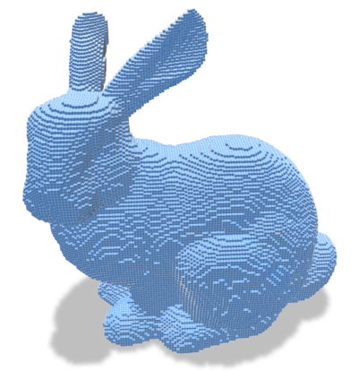
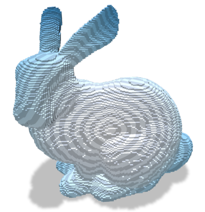
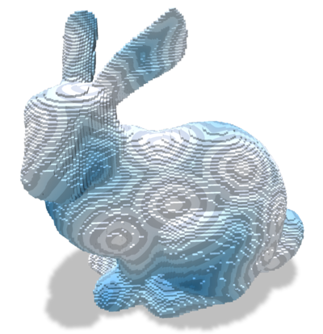
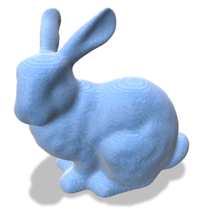
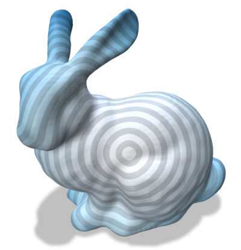
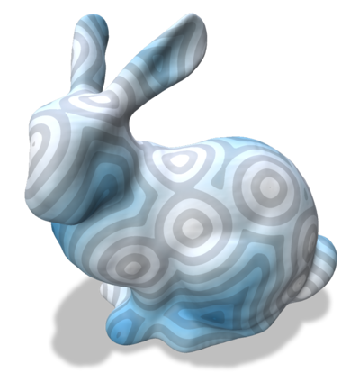

- Generated on for DGtal by
 1.14.0
1.14.0
|
DGtal 2.0.0
|
Part of package DEC package.
In this documentation page, we focus on an implementation of the "Geodesics In Heat method" ([41]). The main objective is to highlight the use of differential operators from Discrete differential calculus on polygonal surfaces to solve elementary PDEs.
Images are given by the dgtalCalculus-geodesic.cpp example file.
The algorithm consists in three steps (see [41] for details):
The computation involves discrete differential operator definitions (Laplace-Beltrami, gradient, divergence...) as well as linear solvers on sparse matrices. We do not go into the details of the discretization, please have a look to the paper if interested.
The class GeodesicsInHeat contains the implementation of the Geodesics in Heat method. It relies on the PolygonalCalculus class for the differential operators (Discrete differential calculus on polygonal surfaces).
First, we need to instantiate the GeodesicsInHeat class from an instance of PolygonalCalculus:
Then, we can prefactorized the solvers for a given a timestep \(dt\):
Once prefactorized, we can add as many sources as we want using the method:
The resulting geodesics diffusion is obtained by:
From dgtalCalculus-geodesic.cpp code on a digital surface and a regularization of the digital surface (see Digital surface regularization by normal vector alignment).
| Input | Geodesics in heat | Geodesics with multiple (random) sources |
|---|---|---|

|

|

|

|

|

|